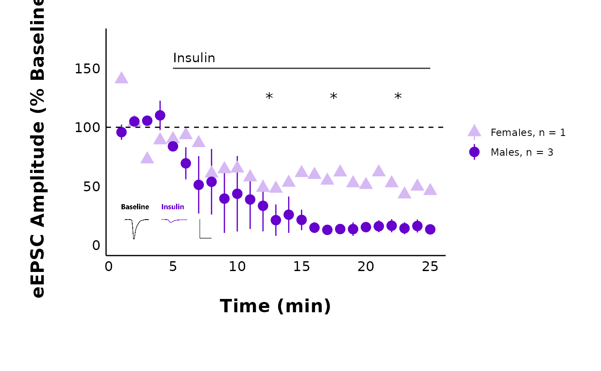

How to use patchclampplotteR
patchclampplotteR will help you analyze and plot your
patch clamp data efficiently. This vignette will walk you through the
complete process of transforming raw data into publication-quality
plots!
Install and load package
You can install the development version of patchclampplotteR from GitHub. Only do this once per computer, or if there’s a major update.
pak::pak("christelinda-laureijs/patchclampplotteR")And then load the package each time you want to use it:
About the data
This dataset consists of whole-cell patch clamp recordings of neurons within the dorsomedial hypothalamus (DMH), a brain region critical for appetite regulation, stress responses and other processes. I recorded evoked excitatory post-synaptic currents for five minutes under baseline conditions, then added 500 nM insulin to the perfusion solution, and I continued recording for 25 minutes.
My goal is to determine if insulin affects evoked current amplitude in DMH neurons.
Analyze data in Clampfit
Please see the vignettes in the Articles page to learn about how to analyze data in Clampfit. These vignettes include: Evoked Current Analysis and Action Potential Analysis.
Import raw .csv files
Cell Characteristics
First, I must import a .csv file containing information
about factors such as the animal’s age and sex, the cell ID number, and
other details. Please see the Required columns section
of the documentation for import_cell_characteristics_df()
for explanations of the required columns and what they include.
Note: Since this vignette is included within an R package, the following code requires the function
import_ext_data()to properly locate the.csvfile in the package folder. This won’t be required when you are using the package within your own project folder.You can just write the path to the filename directly within
import_cell_characteristics_df(). For example, you should writeimport_cell_characteristics_df("Data/cell_info.csv")to usecell_info.csvlocated within theData/folder.
cell_characteristics <- import_cell_characteristics_df(import_ext_data("sample_cell_characteristics.csv"))
reactable(cell_characteristics)Raw evoked current data
Next, I will import the raw evoked current data that has been copied
over from Clampfit (again, please see the Evoked
Current Analysis vignette for more details. This is a
.csv file containing four columns: Letter,
ID, P1 and P2:
letter: A unique identifier for a single recording, which allows you to link evoked current data, spontaneous current data, action potential, data, and information on cell characteristics.ID: The name of the .abf filename used to obtain the data, which is useful for verifying the recordings and cross-referencing to your lab book.P1: The amplitude of the first evoked current (pA).P2: The amplitude of the second evoked current (pA).
Don’t worry too much about capitalizing the column names or not.
add_new_cells()will automatically convert all column names to lowercase for consistency across functions. Capitalized letters will be retained for columns likeID,X,Y,P1, andP2.
sample_eEPSC_data <- read.csv(import_ext_data("sample_new_eEPSC_data.csv"))
reactable(sample_eEPSC_data)Add new cells
The next step is to merge the raw evoked current data with the cell
characteristics data. add_new_cells() will merge these two
datasets, using letter as the common column. This function
requires three .csv files:
- The new raw data
- The cell characteristics
- An existing
.csvwith raw data that has been previously imported. As your project goes on, you will eventually be appending new data onto your existing datasheet, but if you are starting completely fresh, use a blank.csvfile containing just the required column names.
blank_csv <- read.csv(import_ext_data("empty_raw_eEPSC_datasheet.csv"))
reactable(blank_csv)Here is an example of what a full dataset can look like. In the
following example, I’ve just added new data for one cell
(letter = AV).
raw_eEPSC_data <- add_new_cells(
new_raw_data_csv = import_ext_data("sample_new_eEPSC_data.csv"),
cell_characteristics_csv = import_ext_data("sample_cell_characteristics.csv"),
old_raw_data_csv = import_ext_data("sample_eEPSC_data.csv"),
current_type = "eEPSC",
write_new_csv = "no",
new_file_name = "20241118-Raw-eEPSC-Data.csv"
)
#> Warning in add_new_cells(new_raw_data_csv =
#> import_ext_data("sample_new_eEPSC_data.csv"), : Renamed dataframe columns to
#> lowercase
#>
#>
#> Letter check passed: All letters are present in both "/home/runner/work/_temp/Library/patchclampplotteR/extdata/sample_cell_characteristics.csv"
#> and "/home/runner/work/_temp/Library/patchclampplotteR/extdata/sample_new_eEPSC_data.csv".
#>
#> The matching cells are:
#> AV
#>
#>
#> Duplication check passed: All letters in "/home/runner/work/_temp/Library/patchclampplotteR/extdata/sample_new_eEPSC_data.csv" are new relative to "/home/runner/work/_temp/Library/patchclampplotteR/extdata/sample_eEPSC_data.csv"
#>
#> Adding the new following new cells:
#> AVOutput messages
add_new_cells() pruduces several warnings and messages.
One warning lets you know you know that the column names have been
renamed to lowercase. This is to avoid case-sensitive issues from
appearing in later functions.
The first message generated with add_new_cells()
indicate that the sample_cell_characteristics.csv and
sample_new_eEPSC_data.csv have the same cells. This is
useful to catch if you forget to add the cell characteristics for the
new data.
The second message indicates that all letters in the new data are new relative to the existing dataset. This ensures that you don’t accidentally paste in the same data twice, resulting in duplicated data.
The final message prints a list of the letters that have been added
to the dataset. In this case, this is AV. It is a good way
to confirm that you’ve added the letters you were planning to add.
You can also ask R to produce a list of all of the unique letters in
the dataset. This won’t catch duplicates, but it can help you identify
if a letter is completely missing from the dataset. See, AV
is now included.
unique(raw_eEPSC_data$letter)
#> [1] "AO" "AZ" "BN" "BO" "BT" "CG" "CZ" "L" "FT" "FX" "GF" "GI" "GK" "GR" "GX"
#> [16] "HB" "HC" "HG" "HN" "AV"Analyze current amplitude
Step 1: Normalize currents
The first step is to normalize the current amplitudes within each recording relative to the average current amplitude during the baseline period. This makes it easier to compare across cells that have a wide range of starting amplitudes, since all baseline values will be converted to (roughly) 100%.
Note how I set the minimum and maximum time values. This will limit the data to values between 0 min and 25 minutes.
I set the
interval_lengthto 5 because I wanted to divide my data into 5-minute intervals for later statistical analyses.The baseline period (
baseline_length) lasted 5 minutes. Clampfit recorded the current amplitude as negative values, so I setnegative_transform_currentsto “yes” which will flip the current amplitudes to positive values.
raw_eEPSC_df <- make_normalized_EPSC_data(
filename = import_ext_data("sample_eEPSC_data.csv"),
current_type = "eEPSC",
min_time_value = 0,
max_time_value = 25,
interval_length = 5,
baseline_length = 5,
negative_transform_currents = "yes"
)This is the sample raw evoked current dataset included in the package. To reduce the vignette size, I am printing just the first 20 rows. The full dataset contains > 5680 rows!)
# To reduce the vignette size, I am printing just the first 20 rows. The
head(raw_eEPSC_df, n = 20) %>%
reactable()make_normalized_EPSC_data() will retain the cell
characteristics and P1 and P2 values from
before. However, you will notice some changes.
If you set negative_transform to “yes”, P1
and P2 will be multiplied by -1. This is to
“flip” current amplitude data that was recorded as negative values in
Clampfit. Since the data are evoked current data
(current_type = "eEPSC"), some new columns are added. They
are:
PPR: The paired-pulse ratio, which is the amplitude of the second evoked current divided by the first evoked current (PPR = P2/P1).interval: The interval that the data belongs to. I set theinterval_lengthto 5, which means the data will be divided into 5-minute intervals. The intervals will have names like “t0to5”, “t5to10”, and so on up until the maximum interval.baseline_range: You probably won’t interact with this much, but this is just a column stating “TRUE” if the time is within the baseline period, or “FALSE” if the time is outside of this range. This is required for the normalization function to identify which values are outside of the baseline (and should be transformed).baseline_mean: This is one number that represents the average evoked current amplitude during the baseline period. This value is different for each recording.P1_transformed: The first evoked current amplitude, normalized relative to the mean baseline amplitude. For example, if the mean baseline amplitude is 80 pA and aP1value is 40 pA,P1_transformedwill be 50%.P2_transformed: The second evoked current amplitude, normalized relative to the mean baseline amplitude of the first evoked current.
Plot raw data
Let’s see what the raw values look like over time!
plot_raw_current_data() will generate a scatterplot of
evoked current amplitude (pA) over time (min) for all cells within the
treatment and category that you specify. Behind the scenes, this really
runs a loop over each letter, generating a ggplot object for each
recording.
Please see the documentation for plot_raw_current_data()
to learn about the arguments in more detail.
raw_eEPSC_control_plots <- plot_raw_current_data(
data = raw_eEPSC_df,
plot_treatment = "Control",
plot_category = 2,
current_type = "eEPSC",
parameter = "P1",
pruned = "no",
hormone_added = "Insulin",
hormone_or_HFS_start_time = 5,
theme_options = sample_theme_options,
treatment_colour_theme = sample_treatment_names_and_colours
)plot_raw_current_data() will return a list of ggplot
objects. If you want to observe just one specific plot, you can select
it by letter.
raw_eEPSC_control_plots$L
Step 2: Prune data
It is often useful to summarize the data per minute. If you are
familiar with GraphPad Prism’s “prune rows” function,
make_pruned_EPSC_data() will perform the same function.
In this vignette, I’ll use the example of pruning data per minute because this is what is typically used in the Crosby lab. You can change this value by changing the
interval_lengthto something other than1.
pruned_eEPSC_df <- make_pruned_EPSC_data(
data = raw_eEPSC_df,
current_type = "eEPSC",
min_time_value = 0,
max_time_value = 25,
baseline_length = 5,
interval_length = 1
)This function will return a list of three dataframes. To access each
list, type the object name, followed by a dollar sign. For example,
write pruned_eEPSC_df$individual_cells to access the first
dataframe in the list.
The three dataframes are:
$individual_cells: This dataframe has the same structure as the raw evoked current data, except the data have been pruned per minute. New columns includemean_P1andsd_P1, and there are some other columns for variance analysis (please see the documentation formake_pruned_EPSC_data()for more details).$for_table: This dataframe has only two columns:letterandP1_transformedwhere the prunedP1values have been collapsed into a list. This is used to create a sparkline inmake_interactive_summary_table().$all_cells: This dataframe contains data that have been grouped by treatment and sex. In this dataframe, the data have been summarized and collapsed into one datapoint per minute for all cells per minute for a specific sex. This is useful for creating summary plots for publication (e.g.plot_summary_current_data()) and for future statistical testing to compare groups.
Plot pruned data
You can use the same plot_raw_current_data() to plot the
pruned data. You will need to make changes to the following
arguments:
-
data: Refer to the third element of the list produced frommake_pruned_EPSC_data(). This is$individual_cells. -
parameter: Change this to “mean_P1”. -
pruned: Change this to “yes”
raw_eEPSC_control_plots_pruned <- plot_raw_current_data(
data = sample_pruned_eEPSC_df$individual_cells,
plot_treatment = "Control",
plot_category = 2,
current_type = "eEPSC",
parameter = "mean_P1",
pruned = "yes",
hormone_added = "Insulin",
hormone_or_HFS_start_time = 5,
theme_options = sample_theme_options,
treatment_colour_theme = sample_treatment_names_and_colours
)
raw_eEPSC_control_plots_pruned$LSee how this is the same as the raw data plot, except for it is pruned per minute?
The pruned data from all cells within a specific treatment and sex
($all_cells) will enable you to make a summary plot using
plot_summary_current_data().
Notice how
datais nowsample_pruned_eEPSC_df$all_cells, andparameteris “amplitude”. There are lots of customization opportunities here, including adding a representative trace as a .png overlay, which you can read about in the documentation for this function.
plot_summary_current_data(
plot_category = 2,
plot_treatment = "Control",
data = sample_pruned_eEPSC_df$all_cells,
current_type = "eEPSC",
parameter = "amplitude",
include_representative_trace = "no",
signif_stars = "yes",
t_test_df = sample_eEPSC_t_test_df,
hormone_added = "Insulin",
large_axis_text = "no",
shade_intervals = "no",
hormone_or_HFS_start_time = 5,
treatment_colour_theme = sample_treatment_names_and_colours,
theme_options = sample_theme_options
)
#> Warning: Removed 25 rows containing missing values or values outside the scale range
#> (`geom_segment()`).
Step 3: Summarize data
The next step is to group the data by treatment by sex and obtain
summary data. This dataset groups the data into intervals and generates
summary statistics (like mean and standard error) for each point. The
interval length was already specified during the
make_normalized_EPSC_data() function from earlier.
summary_eEPSC_df <- make_summary_EPSC_data(
data = sample_raw_eEPSC_df,
current_type = "eEPSC",
save_output_as_RDS = "no"
)
head(summary_eEPSC_df, n = 30) %>%
reactable()Analyze the paired-pulse ratio
Create PPR dataset
The function make_PPR_data() is actually just a
filtering function that will limit the raw evoked current data to two
specific intervals. These represent the “before”
(baseline_interval) and “after”
(post_hormone_interval) states. You can also choose to
limit the PPR values to a certain range to exclude outliers.
PPR_df <- make_PPR_data(
data = raw_eEPSC_df,
include_all_treatments = "yes",
list_of_treatments = NULL,
PPR_min = 0,
PPR_max = 5,
baseline_interval = "t0to5",
post_hormone_interval = "t20to25",
treatment_colour_theme = sample_treatment_names_and_colours
)
head(PPR_df, n = 10) %>%
reactable()Plot PPR data
For a specific treatment:
plot_PPR_data_one_treatment(
data = PPR_df,
plot_treatment = "Control",
plot_category = 2,
baseline_label = "Baseline",
post_hormone_label = "Insulin",
large_axis_text = "no",
treatment_colour_theme = sample_treatment_names_and_colours,
theme_options = sample_theme_options,
save_plot_png = "no"
)
#> Warning: Removed 2 rows containing missing values or values outside the scale range
#> (`geom_segment()`).
For multiple treatments:
plot_PPR_data_multiple_treatments(
data = PPR_df,
include_all_treatments = "yes",
plot_category = 2,
baseline_label = "B",
post_hormone_label = "I",
theme_options = sample_theme_options,
treatment_colour_theme = sample_treatment_names_and_colours
)
Variance analysis
Create variance dataset
variance_df <- make_variance_data(
data = summary_eEPSC_df,
df_category = 2,
include_all_treatments = "yes",
list_of_treatments = NULL,
baseline_interval = "t0to5",
post_hormone_interval = "t20to25",
treatment_colour_theme = sample_treatment_names_and_colours,
save_output_as_RDS = "no"
)
reactable(variance_df)Plot variance comparisons
You can create plots comparing the inverse coefficient of variation squared, and the variance-to-mean ratio.
cv_comparison_control_plot <- plot_variance_comparison_data(
data = variance_df,
plot_category = 2,
plot_treatment = "Control",
variance_measure = "cv",
baseline_interval = "t0to5",
post_hormone_interval = "t20to25",
post_hormone_label = "Insulin",
large_axis_text = "no",
treatment_colour_theme = sample_treatment_names_and_colours,
theme_options = sample_theme_options
)
vmr_comparison_control_plot <- plot_variance_comparison_data(
data = variance_df,
plot_category = 2,
plot_treatment = "Control",
variance_measure = "VMR",
baseline_interval = "t0to5",
post_hormone_interval = "t20to25",
post_hormone_label = "Insulin",
large_axis_text = "no",
treatment_colour_theme = sample_treatment_names_and_colours,
theme_options = sample_theme_options
)
cv_comparison_control_plot
vmr_comparison_control_plot
Compare baseline parameters
plot_baseline_data(
data = summary_eEPSC_df,
current_type = "eEPSC",
parameter = "raw_amplitude",
include_all_treatments = "yes",
list_of_treatments = NULL,
baseline_interval = "t0to5",
large_axis_text = "no",
plot_width = 8,
treatment_colour_theme = sample_treatment_names_and_colours,
theme_options = sample_theme_options,
save_plot_png = "no"
)
#> Warning: Removed 2 rows containing missing values or values outside the scale range
#> (`geom_segment()`).